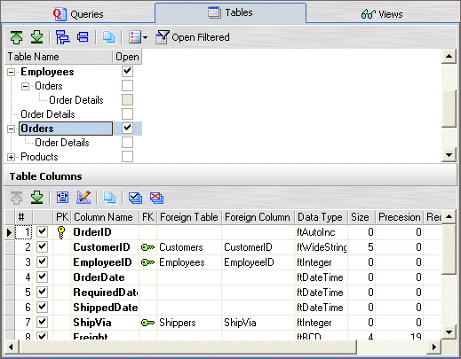

UnSelect All buttons on the grid toolbar can be used to quickly select or unselect all columns
UnSelect All buttons on the grid toolbar can be used to quickly select or unselect all columns Table: Columns Info
When you select a table on the tables-tree, the Table Columns panel below is updated with the columns of the selected table.
The PK column indicates one or more columns that make up the Primary Key of the table.
The FK column indicates the Foreign Keys of the table.
Before opening the table you can restrict the columns to displayed, by unchecking those you don't want.
The Select All and UnSelect All buttons on the grid toolbar can be used to quickly select or unselect all columns

Created with the Freeware Edition of HelpNDoc: Free HTML Help documentation generator